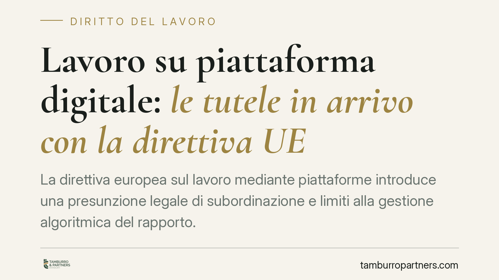

Lavoro su piattaforma digitale: le tutele in arrivo con la direttiva UE
La direttiva europea sul lavoro mediante piattaforme introduce una presunzione legale di subordinazione e limiti alla gestione algoritmica del rapporto. Il recepimento italiano è atteso nei prossimi mesi. Per chi lavora tramite app di consegna o servizi on demand cambiano le regole dell'onere probatorio; per le piattaforme aumentano gli obblighi di trasparenza e controllo umano sulle decisioni.

Il contesto normativo
Il 23 ottobre 2024 l'Unione europea ha adottato la direttiva (UE) 2024/2831, relativa al miglioramento delle condizioni di lavoro nel lavoro mediante piattaforme digitali. Si tratta del primo intervento organico a livello europeo su un fenomeno che, in Italia, coinvolge in modo visibile i rider ma riguarda anche una platea più ampia di prestatori attivi tramite applicazioni e portali.
La direttiva deve essere recepita dagli Stati membri entro il termine fissato dal testo europeo. In Italia il recepimento è in fase di definizione: alla data di questo contributo non risulta ancora pubblicato in Gazzetta Ufficiale un decreto legislativo attuativo con numero e contenuto definitivi. Indichiamo pertanto i principi della fonte europea, segnalando che la disciplina interna di dettaglio — comprese decorrenze e soglie — andrà letta sul testo di recepimento una volta pubblicato.
I due pilastri della direttiva
Il primo pilastro è la presunzione legale di rapporto di lavoro subordinato. Quando emergono elementi che indicano un controllo e una direzione sulla prestazione, il rapporto si presume subordinato e grava sulla piattaforma l'onere di provare il contrario. È una inversione dell'onere probatorio: non è più il lavoratore a dover dimostrare la subordinazione, ma la piattaforma a dover dimostrare l'autonomia.
Attenzione, però: la presunzione non è automatica né assoluta. Opera sulla base di indici concreti di controllo e ammette prova contraria. Tra gli indici tipicamente rilevanti rientrano, a titolo esemplificativo:
- la geolocalizzazione costante e il tracciamento dell'attività;
- i sistemi di rating e valutazione che incidono sull'assegnazione del lavoro;
- le penalizzazioni per il rifiuto di un turno o di una consegna;
- la determinazione unilaterale di compensi, tempi e modalità di esecuzione;
- limiti alla possibilità di lavorare per altri committenti.
Il secondo pilastro riguarda la gestione algoritmica. La direttiva impone trasparenza sui sistemi automatizzati di monitoraggio e decisione e vieta che scelte di particolare impatto — come la disattivazione dell'account o la cessazione del rapporto — siano adottate in modo interamente automatizzato, senza intervento umano e senza possibilità di contestazione.
Il rapporto con la disciplina italiana vigente
La novità europea non nasce nel vuoto. L'ordinamento italiano conosce già la nozione di lavoro subordinato dell'art. 2094 c.c. e dispone di strumenti specifici: l'art. 2 del d.lgs. 81/2015 estende le tutele del lavoro subordinato alle collaborazioni etero-organizzate, mentre gli artt. 47-bis e seguenti dello stesso decreto dettano una tutela minima per i rider con contratto autonomo. La direttiva interviene su questo tessuto rafforzando il profilo probatorio e introducendo regole nuove sulla gestione algoritmica. Il coordinamento tra le due discipline sarà chiarito dal decreto di recepimento.
Ambito di applicazione
La disciplina si rivolge alle piattaforme digitali che organizzano, tramite sistemi automatizzati, prestazioni di lavoro svolte da persone fisiche, e ai lavoratori che operano attraverso di esse. L'estensione esatta — tipologie di piattaforme, eventuali soglie dimensionali, esclusioni — dipenderà dalle scelte del legislatore nazionale in sede di recepimento.
Implicazioni pratiche
Per il lavoratore su piattaforma, la posizione processuale migliora: in presenza degli indici di controllo, sarà la piattaforma a dover dimostrare l'effettiva autonomia. Per le piattaforme, aumenta l'esposizione a riqualificazioni e cresce il peso degli obblighi di trasparenza e di revisione umana delle decisioni algoritmiche. La vigilanza resta affidata all'Ispettorato Nazionale del Lavoro.
Cosa fare in concreto
Se lavori tramite piattaforma:
- Conserva prove delle modalità operative reali: turni, penalità, messaggi dell'app, dati di geolocalizzazione.
- Richiedi informazioni sui sistemi automatizzati che ti valutano o sanzionano.
- Contesta per iscritto disattivazioni o cessazioni decise senza intervento umano.
Se gestisci una piattaforma:
- Mappa i sistemi algoritmici in uso e documenta il margine di controllo umano sulle decisioni rilevanti.
- Rivedi contratti e procedure interne alla luce degli indici di subordinazione.
- Valuta la certificazione dei rapporti presso le commissioni competenti per ridurre il contenzioso.
In entrambi i casi, consigliamo di non attendere l'entrata in vigore per fare il punto sulla propria organizzazione: l'anticipazione delle verifiche riduce i rischi.
---
*Contributo informativo a cura di Tamburro & Partners - Avv. Giuseppe Tamburro. Non costituisce parere legale.*
Ogni storia di lavoro ha i suoi tempi.
Se gestisci HR e vuoi un confronto su contenzioso, ispezioni o licenziamenti, scrivi allo studio. Ti rispondiamo entro un giorno lavorativo.